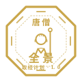
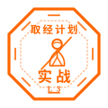
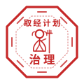

通识全景课 · 一课纵览
L+ · Panorama
四课时选课
Choose Your Level
LEVEL 1 · 认知篇
入个门：取经即项目
新入职员工（入职 0–1 年）
难度 ★
听懂项目语言，破除"项目管理=催进度"的误解。
- 什么是项目：高考、婚礼与取经
- 西游对照表与师徒五角色
- 互动：测测你是取经团队里的谁
- 新人起步：沙僧与白龙马不丢人
LEVEL 2 · 基础篇
上工具：跟着文牒走
项目经理助理 / 项目专员
难度 ★★
掌握项目"记录与跟催"四大件，成为PM的可靠外挂。
- 文牒=章程，SMART 逐条对照
- 风险登记册：81难台账四栏
- 汇报保真：拒绝"二手小作文"
- 验收三栏清单入门
LEVEL 3 · 实战篇
扛大旗：从承诺到交付
项目经理 / 交付骨干
难度 ★★★
独立管理项目全执行周期，从"被项目管"到"管项目"。
- 三年变十四年：规划谬误与关键路径
- 女儿国：最难的一关（变更请求）
- 无字真经：敢打回才算范围管理
- 影响×概率：风险分级与应急
配套资源
Companion Tools
 角色自测 H5
手机扫码直达 · 10 道情境题 · 约 5 分钟
角色自测 H5
手机扫码直达 · 10 道情境题 · 约 5 分钟测你是师徒五人中的谁
唐僧 · 悟空 · 八戒 · 沙僧 · 白龙马 培训现场投影 · 学员扫码即测 ｜ 点击进入网页版 成绩查询学员凭手机号查本人成绩与文牒 ｜ 老师凭登记手机号查全班成绩、导出CSV 模板教具包 八份随堂教具 · 通关文牒 / 登记册 / 纪要 / 三栏清单 / 变更批复 / 打回清单 / 复盘框架 / 封赏方案 ｜ 支持打印
主讲老师专区
Instructor Center
登记信息或进入开考控制台。登记后的手机号将作为老师端统一凭证——可用于开考、在成绩查询页与成绩总表查看全班成绩并导出 CSV。同手机号重复登记将覆盖更新。
🎯 开考控制台
登录后选择本场科目 → 投影开考大屏（唯一二维码 + 实时交卷数 + 分享链接）
主讲老师登记（尚未登记的老师请先登记，登记口令向课程管理员获取）：
通关文牒 · 结业体系
Passport System
📜 每过一级，加盖一印
呼应西游"每过一国、加盖一印"的叙事：每级课程结业在线考试达 95 分，系统即在你的《通关文牒》上自动加盖对应等级"通关印"。四级集齐，授予"取经人"结业认证，可纳入人才画像标签，并优先进入下一角色培养池。

通识印 · 唐僧 · L+

认知印 · 白龙马 · L1
工具印 · 沙僧 · L2

实战印 · 悟空 · L3

治理印 · 八戒 · L4
印中师徒：五级印章由师徒五人坐镇八卦炉——“八卦炉里炼真身，西行路上修真经”：唐僧掌全景方向（L+ 通识）· 白龙马化形上路先认清自己（L1 认知）· 沙僧宝杖在手把活干实（L2 工具）· 悟空降妖除魔真刀真枪（L3 实战）· 八戒以“八戒”律己、统筹各方（L4 治理）。你修到哪一关，就炼哪一位的真身。
电子结业凭证：结业考试合格（≥95分）即自动登记并生成干支纪年文牒编号（如“丙午年 第五千零一号”），学员在成绩页或成绩查询页凭手机号下载专属《通关文牒》PDF；文牒由考试系统统一发放，不支持人工登记。
在线答题（仅课堂扫码）：结业考试卷为教师用资料，本页不提供试卷入口，学员无法从课程门户进入考试——开考时由讲师打开试卷页投影答题二维码，学生扫码即进入本人随机试卷（题序/选项双乱序，人手一份不重复），交卷由服务器自动评分出分并即时回顾错题。老师查看全班成绩请访问 成绩总表（老师端）。
设计原则：由浅入深（认知→工具→执行→治理）；一套IP四层复用（81难在四级分别讲"里程碑/台账/分级应对/容错治理"）；成长路径即招生路径——L1 的学员知道 L3 在等他。